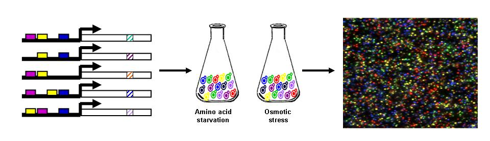

|
 To ensure tightly coordinated transcriptional levels under a spectrum of conditions, spatial layout of the promoter induces cooperative or competitive binding of transcription factors to specific binding sites within the larger dynamic structural context of chromatin. Despite the wealth of data on protein-DNA interactions and computationally predicted binding sites, relatively little is known about the functional organization and logic of promoters. To date, conventional genetics has been used to uncover the contribution of cis-acting promoter elements on promoter activity in vivo. Unfortunately, such experiments are labor-intensive and not conducive to parallel analysis. Using the power of forward genetics power we use synthetic biology techniques to unravel how different cis elements of a promoter contibute to contolling levels of transcription. Our experimental framework combines two novel technologies recently developed at the Church Lab at Harvard Medical School. In collaboration with George Church and Noel Goddard , we use programmable DNA-microchips to synthesize a large number of combinatorial variants of a promoter sequences. Each promoter variant will be tagged with unique barcodes that can be counted through polony sequencing , a technique that allows to count number of copies per variant. We use computational models to design large numbers of promotors and in a highly parrallel manner, synthesize these and quantitatively measure the expression levels of each variant under a large number of enviornmental conditions. The unprecedented dynamic range of our technologies allows the measurement promoter activity beyond the current binary categorization. Our technology allows us to probe the continuous nature of sequence affinity to transcription factors. Additionally, manipulating multiple sites and combinations of factors is particularly important in order to discover the synergy and epistasis between sites - thus discerning the logic. The comprehensive nature of our approach will enable the discovery of design principles in promoter architecture and lead to understanding of both functional and evolutionary consequences. |